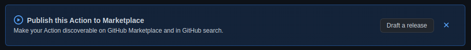
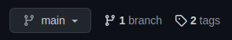
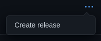
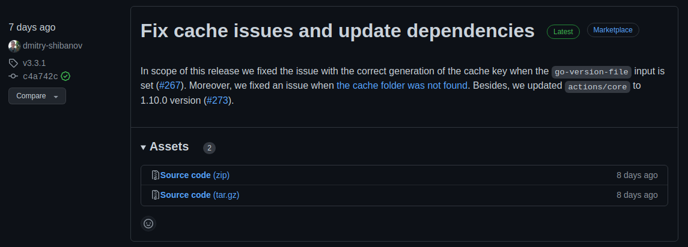
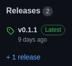

Publicación de acciones personalizadas
Para finalizar las lecciones relacionadas con las acciones personalizadas, vamos a indagar en cómo publicarlas.
Al finalizar, sabrá:
-
Cómo publicar una acción personalizada en el marketplace de GitHub.
-
Cómo suprimir una versión de una acción personalizada del marketplace de GitHub.
Introducción
El marketplace de GitHub (GitHub marketplace) es un sitio público donde podemos publicar acciones personalizadas. Las acciones aquí registradas se pueden utilizar en nuestros flujos de trabajo. Por lo que se han convertido en el lugar donde publicar aquellas acciones que deseamos compartir con la comunidad.
Proceso de publicación
Para publicar una acción, es necesario generar una etiqueta y un lanzamiento de GitHub para, a continuación, realizar una publicación manual. El etiquetado y el lanzamiento se pueden hacer manual o automáticamente, pero actualmente la publicación en el marketplace debe hacerse manualmente desde un lanzamiento ya creado.
La etiqueta, recordemos, es lo que indicaremos en las acciones cuando las invoquemos. Por ejemplo, si invocamos la acción siacodelabs/setup-antlr como siacodelabs/setup-antlr4@v2, lo que estamos indicando es la versión publicada con la etiqueta v2. Por convenio, las etiquetas de las acciones personalizadas siguen los formatos vX y vX.Y.Z como, por ejemplo, v1 o v1.2.3.
Groso modo, el proceso consiste en:
-
Generar una etiqueta para la versión actual en el repositorio.
-
Crear un lanzamiento de GitHub de la acción para su publicación en el marketplace.
-
Realizar una publicación manual del lanzamiento en el marketplace.
Si el proceso lo realiza manualmente, el lanzamiento y la publicación se pueden hacer en un único paso.
Primera publicación en el marketplace de GitHub
La primera publicación de la acción es especial. En este caso, encontrará un mensaje en el repositorio que indica si desea publicar la acción:

Haga clic en Draft a release para llevar a cabo la publicación y siga los pasos de una publicación manual que se describen a continuación.
Publicación manual
Al comienzo, la manera más sencilla de publicar es hacerlo todo manualmente. Es la que menos dolores de cabeza genera, porque es muy sencilla, pero no es automática que es lo que debemos intentar cuando trabajamos con CI/CD. A pesar de todo, vamos a presentar el proceso porque ayuda a comprender lo que habrá que automatizar posteriormente mediante un flujo de lanzamiento:
-
Crear una etiqueta en el repositorio, por ejemplo, mediante el comando git:
git tag -a v1 -m "release: v1" -
Publicar la etiqueta en el repositorio remoto de GitHub:
git push origin --tags -
Ir al portal web de GitHub.
-
Ir al repositorio de GitHub.
-
Ir a la sección de etiquetas:

-
Mostrar el menú contextual de la etiqueta que representa la versión a publicar haciendo clic en los tres puntos (
...):
-
Hacer clic en el elemento Create release del menú, lo que mostrará un formulario para la generación de un lanzamiento.
-
Comprobar que no existe ningún conflicto en el archivo action.yaml. Si existe, resolverlo y comenzar de nuevo.
-
Elegir la categoría principal a la que asociar la acción como, por ejemplo, Backup Utilities, Code quality, Community, Deployment, etc. Puede elegir otra categoría adicional, aunque esta segunda es opcional.
-
Comprobar que la etiqueta a publicar es la deseada.
-
Fijar un título que describa la versión a publicar. Es libre, ponga lo que mejor describa su lanzamiento. En caso de duda, puede consultar los lanzamientos de actions/setup-node o actions/setup-python.
-
Seleccionar Set as the latest release si estamos ante la última versión, lo más probable.
-
Hacer clic en Publish release.
Si todo ha ido bien, y ha seleccionado también Release this Action to the GitHub Marketplace en lo alto del formulario, en el lanzamiento verá un enlace con el texto Marketplace que le llevará a la acción en el marketplace. He aquí un ejemplo ilustrativo de una versión publicada de la acción actions/setup-go:

Publicación automatizada
He aquí un ejemplo de flujo de lanzamiento reutilizable usado por las acciones personalizadas de Sia Codelabs, el cual puede encontrar en su repositorio público .github, https://github.com/siacodelabs/.github, como actions-release.yaml:
name: Release
on:
workflow_call:
inputs:
version:
description: Version tag to publish
required: true
type: string
env:
version: ${{ inputs.version }}
nodejs: 16.x
actionType: composite
jobs:
release:
name: Release action
runs-on: ubuntu-latest
steps:
- name: Clone repo
uses: actions/checkout@v3
- name: Configure Git metadata
run: |
git config --local user.name ${{ github.actor }}
git config --local user.username ${{ github.actor }}
git config --local user.email ${{ github.actor }}@users.noreply.github.com
- name: Determine action type
run: |
if [[ -f package.json ]]; then
echo "actionType=JavaScript" >> $GITHUB_ENV
fi
- name: Setup Node.js ${{ env.nodejs }} if action type is JavaScript
if: env.actionType == 'JavaScript'
uses: actions/setup-node@v3
with:
node-version: ${{ env.nodejs }}
- name: Update version tag to use if needed
run: |
tag="${{ env.version }}"
if [[ "$tag" != v* ]]; then
echo "version=v$tag" >> $GITHUB_ENV
fi
- name: Update package.json if needed
if: env.actionType == 'JavaScript'
run: |
# (1) determine version x.y.z to use
version=${{ env.version }}
if [[ $version != *.* ]]; then
version=$version.0.0
fi
# (2) set version
npm version --no-commit-hooks --no-git-tag-version ${version:1}
# (3) commit changes
git add package.json
git add package-lock.json
git commit -m "release: ${{ env.version }}"
- name: Create and publish release tag
run: |
git tag -a ${{ env.version }} -m "release: ${{ env.version }}"
git push # required if JavaScript
git push origin --tags
- name: Create release
env:
GITHUB_TOKEN: ${{ secrets.GITHUB_TOKEN }}
run: |
gh release create ${{ env.version }} -t "Release: ${{ env.version }}"
Recuerde que este flujo no publica en el marketplace, sólo genera el lanzamiento. Su publicación debe hacerla de manera manual. Para ello, una vez generado el lanzamiento de GitHub, siga los siguientes pasos:
-
Ir al repositorio de GitHub.
-
Hacer clic en Releases en la pestaña Code, se encuentra en el lateral derecho:

-
Buscar el lanzamiento a publicar, confirmando que no se encuentra ya publicado en el marketplace, y hacer clic en el icono de un lápiz:
Recuerde que para saber si un lanzamiento está publicado en el markeplace, debe aparecer el texto Marketplace que al hacer clic sobre él nos trasladará a la acción en el marketplace:
-
Confirmar que la caja de verificación Publish this Action to the GitHub Marketplace está seleccionada.
-
Revisar los datos que aparecen en el formulario.
-
Hacer clic en Update release.
Si todo ha ido bien, el lanzamiento debe mostrar el enlace Marketplace.
Supresión de publicaciones
Para suprimir una publicación del marketplace, no hay más que suprimir su lanzamiento correspondiente. Por lo general, se realiza mediante una supresión manual usando el portal web de GitHub:
-
Ir al repositorio de GitHub.
-
Ir a los lanzamientos, tal y como vimos en la sección anterior.
-
Buscar el lanzamiento a suprimir y hacer clic en el icono de la papelera.
-
Confirmar la supresión haciendo clic en Delete this release en la ventana emergente que mostrará GitHub.
También puede utilizar el comando gh release delete. Ejemplo:
gh release delete v0.1.1 -y
Puede usar la opción -y o --yes para confirmar la supresión desde el propio comando.